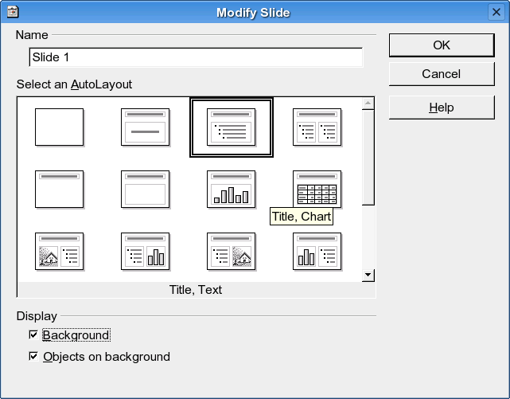

Pri kreiranju slajda birate tip kojem taj slajd pripada. Tip slajda određuje raspored teksta, slika, grafikona... na samom slajdu. Postoji dvadeset različitih tipova. Pri kreiranju novog slajda birate tip slajda i zadajete mu ime u polju za unos Name. Preko šematske sličice slajda se vidi tip. Slajd birate klikom na sličicu slajda čiji tip želite da koristite.

- Blank Slide
- prazan slajd.
- Title Slide
- slajd sa naslovom i pratećim tekstom.
- Title, Text
- slajd sa naslovom i nabrajanjem.
- Title, 2 Text Blocks
- slajd sa naslovom i dva bloka sa nabrajanjima.
- Title Only
- slajd ima samo naslov.
- Title Object
- slajd sa naslovom i okvirom za tekst.
- Title Chart
- slajd sa naslovom i grafikonom.
- Title Spreadsheet
- slajd sa naslovom i tabelom.
- Title, Clipart, Text
- slajd sa naslovom sličicom sa leve i nabrajanjem sa desne strane.
- Title, Text, Chart
- slajd sa naslovom, nabrajanjem i tabelom.
- Title, Text, Clipart
- slajd sa naslovom nabrajanjem na levoj strani i sličicom na desnoj.
- Title, Chart, Text
- slajd sa naslovom grafikonom na levoj i nabrajanjem na desnoj strani.
- Title, Text, Object
- slajd sa naslovom, nabrajanjem sa leve strane i okvirom za tekst sa desne strane.
- Title, Text 2 Objects
- slajd sa naslovom, nabrajanjem sa leve strane i dva okvira za tekst sa desne strane.
- Title, Object, Text
- slajd ima naslov, okvir za tekst sa leve strane i nabrajanje sa desne.
- Title, Object Above Text
- slajd ima naslov i okvir za tekst iznad nabrajanja.
- Title, 2 Objects, Text
- slajd ima naslov, dva okvira za tekst sa leve strane i nabrajanje sa desne strane.
- Title, 2 Objects Above Text
- slajd ima naslov i dva okvira za tekst iznad nabrajanja.
- Title, Text Above Object
- slajd ima nabrajanje iznad okvira za tekst.
- Title, 4 objects
- slajd ima naslov i četiri okvira za tekst.